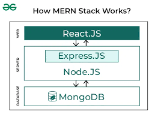

The MERN stack is a popular full-stack web development technology used to build modern and dynamic web applications. It consists of MongoDB for database management, Express.js and Node.js for server-side development, and React.js for creating interactive user interfaces. Since all components of the MERN stack use JavaScript, it allows developers to work efficiently across both frontend and backend. MERN is widely used for developing fast, scalable, and responsive applications such as e-commerce websites, social media platforms, and real-time web apps.
